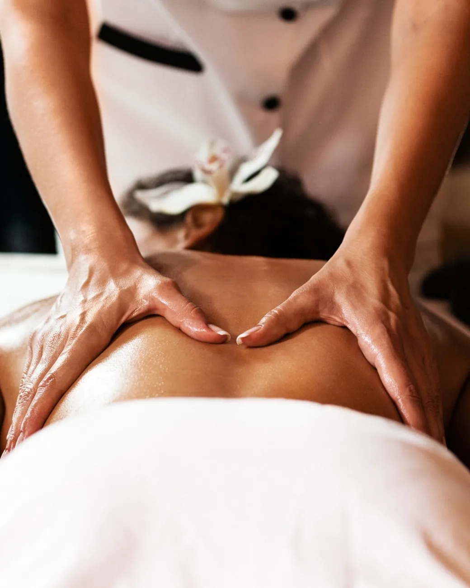

Massage relaxant anti-stress
Détente profondeUn massage à l’huile aromatique pensé pour relâcher la pression du quotidien, favoriser la détente et accompagner l’équilibre du corps et de l’esprit.
Voir le soin
Nos prestationsL’institut propose plusieurs soins inspirés du massage thaïlandais, de la réflexologie plantaire et des massages aux huiles aromatiques. Chaque prestation possède sa propre approche : détente profonde, travail ciblé, récupération, lâcher-prise ou expérience enveloppante.
Un massage à l’huile aromatique pensé pour relâcher la pression du quotidien, favoriser la détente et accompagner l’équilibre du corps et de l’esprit.
Voir le soinUn soin ciblé sur les pieds, par pressions appuyées, pour stimuler les zones réflexes, aider à relâcher les tensions et retrouver une sensation d’équilibre.
Voir le soinUn massage plus profond, mêlant massage thaï, huiles chauffées et réflexologie, idéal pour travailler certaines zones de tension comme le dos, les épaules ou les pieds.
Voir le soinUn massage aux huiles aromatiques qui alterne mouvements fluides, pressions profondes, tapotements et frictions pour dénouer les tensions musculaires.
Voir le soinUne expérience de relaxation enveloppante, pensée pour celles et ceux qui souhaitent vivre un moment de détente plus immersif, avec une fiche dédiée sur le site Ariya.
Voir le soin